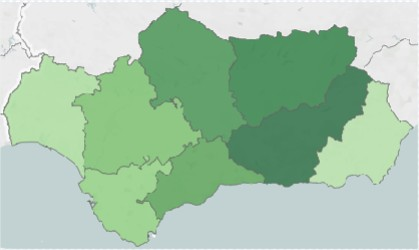

Computación y Robótica - 1º ESO / 2º ESO - LIBRO INTERACTIVO
Dibujo Interactivo
Tarea
Crear un juego de tal forma que al pulsar diferentes teclas o al mover el sprite por la pantalla cuando detecte un determinado color se produzca un cambio de escenario, el personaje comunique algo en un "bocadillo" y se escuche esa información.
El juego debe de tener 8 eventos como mínimo.
Diseño
Para llevar este proyecto se ha considerado que se va a utilizar un mapa de Andalucía.
El primer paso consiste en definir los escenarios de los que se va a componer nuestra aplicación. En este caso, el mapa de Andalucía y sus provincias:

JuntadeAndalucia.es
El siguiente paso, sería duplicar el mapa, tantas veces como provincias existen. Cada escenario duplicado, se le pone el nombre de la provincia, tal y como se muestra:
Se define el código del gato de Scratch. Al hacer clic en la bandera verde, situamos el sprite en una posición determinado y establecemos el fondo predeterminado del mapa con la instrucción "cambiar fondo".
Tras esto, definimos el código correspondiente al movimiento del sprite. Se incluye un condicional junto con un operador booleano OR, en los que se tiene que cumplir la condición "¿tocando el color ___? o ¿tecla ___ presionada?. Si cumple alguna de las dos condiciones debe de decir el nombre de la provincia, cambia el escenario de la provincia correspondiente, esperar un tiempo determinado y, tras esto, volver a poner el escenario inicial. El código se puede mostrar en la siguiente imagen.
Cada provincia va asociada a un color y a una tecla.
Con esta configuración, se puede utilizar este juego, para el conocimiento de la situación de cada provincia moviendo el sprite por el escenario o seleccionando una determinada tecla.
Esta aplicación, en base a la selección de una tecla, se puede asociar a un mural interconectado con el ordenador a través de Makey Makey.
Ejemplo
Otra posibilidad podría ser conocer las partes del cuerpo humano. Un inicio de proyecto podría ser el siguiente:
Se puede crear un mural con el cuerpo humano y cada parte del cuerpo humano se podría enlazar con una tecla de Makey Makey, de tal forma que al pulsarla, en la pantalla aparecería la figura del cuerpo humano con un círculo sobre la parte accionada y el nombre. Asimismo, se le podría asociar un sonido con el nombre, para que sea de mayor accesibilidad la aplicación.